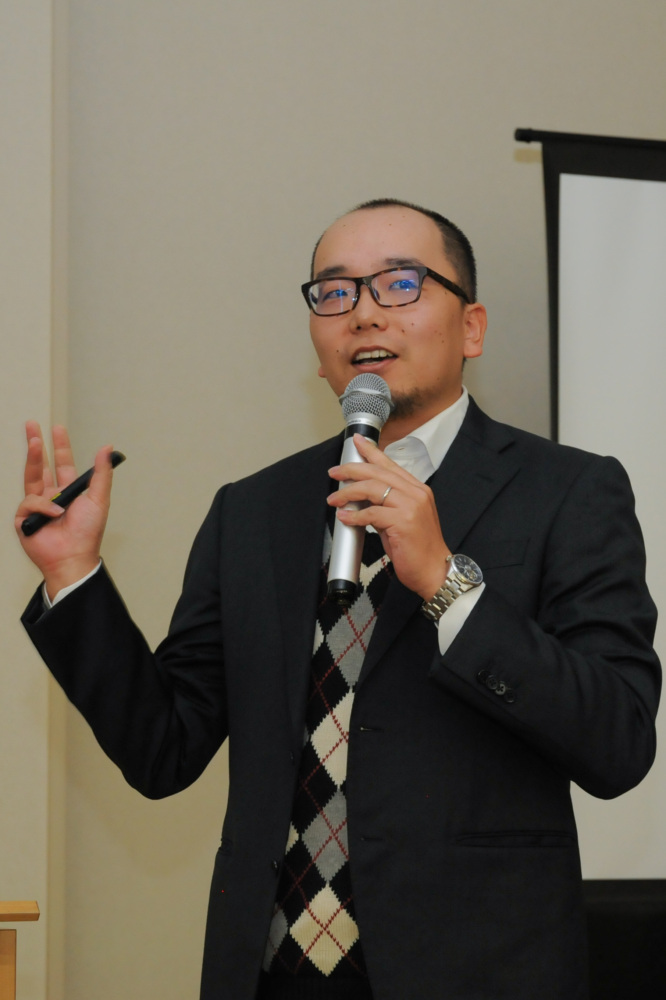

YOSHIHIKO KUNISATO, Ph.D.
学位：博士(医学)
専修大学 人間科学部 心理学科 教授
1983年11月11日生まれ，兵庫県出身
学歴
1999(平成11)年4月 兵庫県立八鹿高等学校 入学
2002(平成14)年3月 同上 卒業
2002(平成14)年4月1日 群馬大学教育学部教育心理学専攻入学
2006(平成18)年3月23日 同上 (山口陽弘研究室)卒業
2006(平成18)年4月1日 広島大学大学院教育学研究科心理学専攻(鈴木伸一研究室) 入学
2008(平成20)年3月23日 同上 (大塚泰正研究室) 修了
2008(平成20)年4月1日 広島大学大学院医歯薬学総合研究科創生医科学専攻先進医療開発科学講座精神神経医科学教室(山脇成人研究室) 入学
2011(平成23)年3月23日 同上 修了
学位
2006(平成18)年 学士（教育学） 群馬大学（第3947号)
2008(平成20)年 修士（心理学） 広島大学（第25520号）「報酬・罰に対する感受性と抑うつとの関連」
2011(平成23)年 博士（医学） 広島大学（第5540号） 「Modulation of default-mode network activity by acute tryptophan depletion is associated with mood change: a resting state functional magnetic resonance imaging study」
職歴・教育歴
2008(平成20)年7月～2009(平成21)年3月 医療法人社団更正会 草津病院 非常勤心理士
2009(平成21)年4月～2011(平成23)年3月 日本学術振興会 特別研究員(DC1)
2011(平成23)年4月〜2013(平成25)年3月 早稲田大学人間科学学術院 助手(鈴木伸一研究室)
2013(平成25)年4月〜2015(平成27)年3月 専修大学人間科学部心理学科 講師
2011(平成23)年5月〜2016(平成28)年3月 独立行政法人 国立精神・神経医療研究センター 技術研究生
2013(平成25)年5月〜 早稲田大学重点領域研究機構応用脳科学研究所 招聘研究員
2015(平成27)年4月〜 2021(令和3)年3月専修大学人間科学部心理学科 准教授
2019(平成32)年4月〜2020(令和２)年3月 Psychological Methods, Department of Psychology,University of Amsterdam 訪問研究員
2021(令和3)年4月〜 専修大学人間科学部心理学科 教授
非常勤講師(TA)
現在担当中の講義（年度）
過去に担当した講義（年度）
2008(平成20)年 広島大学医学部 ティーチング・アシスタント （講義：精神科学）
2010(平成22)年 早稲田大学人間科学部通信教育課程 教育コーチ (講義： 産業カウンセリング)
2012(平成24)年 東京都立北多摩看護専門学校 非常勤講師（講義：心理学）
2011(平成23)年〜2012(平成24)年 聖徳大学心理福祉学部心理学科 非常勤講師（講義：神経心理学）
2013(平成25)年 お茶の水女子大学 非常勤講師 （講義：大脳生理学（と心理・行動））
2013(平成25)年〜 2017(平成29)年 早稲田大学人間科学部 非常勤講師（講義：「学習心理学」）
2013(平成25)年〜 2017(平成29)年 早稲田大学大学院人間科学研究科 非常勤講師（講義：「学習心理学特論」）
2014(平成26)年 聖徳大学心理福祉学部心理学科 非常勤講師（講義：神経心理学）
2014(平成26)年〜2016(平成28)年 早稲田大学大学院人間科学研究科 非常勤講師（講義：「臨床心理学研究の最前線」の「医療臨床心理学研究の最前線」担当）
2014(平成26)年〜2017(平成29)年 順天堂大学医学部 非常勤講師（講義：「健康の行動科学」の「行動とは何か」担当）
2016(平成28)年 早稲田大学大学院文学研究科 非常勤講師（講義：「心理学特論2」）
2017(平成29)年 早稲田大学大学院人間科学研究科 非常勤講師（講義：「臨床心理面接法特論II」）
2017(平成29)年 早稲田大学大学院人間科学研究科 非常勤講師（講義：「医療心理学・職場メンタルヘルス学ゼミ(1)A, (1)B, (2)A, (2)B」）
2015(平成27)年〜2018(平成30)年 北里大学大学院看護学研究科 非常勤講師（講義：「看護研究論演習」）
2018(平成30)年 大阪大学大学院基礎工学研究科 非常勤講師（講義：「データ科学特別講義」）
2020(令和２)年 中央大学大学院文学研究科博士課程後期課程 非常勤講師（講義：心理学特殊講義Ⅰ）
2021(令和３)年 慶應義塾大学大学院社会学研究科 非常勤講師 （(修士)神経科学特論Ⅲ・(博士)神経科学特殊研究Ⅲ サブタイトル：計算論的精神医学入門）
2014(平成26)年・2016(平成28)年・2018（平成30）年・2020(令和２)年・2021(令和３)年 東京大学教養学部統合自然科学科 非常勤講師（講義：認知行動障害論）
研究キーワード
計算論的臨床心理学，計算論的精神医学，脳機能画像研究，認知行動療法，気分・不安障害，意思決定，恐怖条件づけ
外部資金
2019年-2021年度
日本学術振興会 基盤研究(C) 研究分担者
「ベイズ推論と情報圧縮から広がる認知モデルの展開」
2020年-2022年度
日本学術振興会 挑戦的研究(萌芽) 研究代表者
「再現可能な心理学研究のためのクラウド研究基盤の開拓」
2020年-2024年度
日本学術振興会 基盤研究(A) 研究分担者
「人工知能技術と疾患横断的・次元的アプローチに基づく精神障害の計算論的診断学の 創出」
2021年-2023年度
日本学術振興会 学術変革領域研究(B) 研究分担者
「デジタル-人間融合による精神の超高精細ケア」
終了した研究課題
2009年-2010年度
日本学術振興会 特別研究員研究奨励費 研究代表者
「うつ病の報酬・罰に対する感受性と治療効果に関する認知神経科学的検討」
2011年-2012年度
日本学術振興会 研究スタート支援 研究代表者
「うつ病の将来予測障害に関わる神経メカニズムの研究」
2013年-2015年度
日本学術振興会 若手研究(B) 研究代表者
「気分障害患者の認知的情動制御不全にかかわる認知神経メカニズムの検討」
2013年度
日本学術振興会 基盤研究(B) 研究分担者
「温熱的快適性の形成メカニズムの解析と衣服内環境評価への応用」
2016年-2019年度
日本学術振興会 若手研究(A) 研究代表者
「恐怖条件づけの獲得・消去・再発の個人差に関わる認知機能と神経基盤」
2018年-2020年度
日本学術振興会 基盤研究(C) 研究分担者
「対人援助職者のバーンアウト予防のためのＡＣＴプログラムの開発」
2018年-2020年度
日本学術振興会 基盤研究(B) 研究分担者
「計算論モデルを用いた動的行動特性の縮約による精神疾患の評価と予測」
学会委員等
日本認知・行動療法学会 2020-2022 編集委員会 副編集委員長
日本認知・行動療法学会 2020-2022 教育・研修委員会 副委員長
日本認知・行動療法学会 2020-2022 代議員
日本心理学会 2021- Japanese Psychological Research編集委員
日本心理学会 2021- Japanese Psychological Research副委員長
公認心理師養成大学教員連絡協議会 2018- 学部カリキュラム検討委員会 委員
公認心理師養成大学教員連絡協議会 2018- 国家試験検討委員会 委員
公認心理師養成大学教員連絡協議会 2019-2021 広報委員会 委員
公認心理師養成大学教員連絡協議会 2021- 広報委員会 副委員長
公認心理師の会 2021- 理事
公認心理師の会 2020- 研究推進・学術情報提供委員会 委員
過去の学会委員歴
日本認知・行動療法学会 2013-2018 編集委員会 編集委員
日本認知・行動療法学会 2016-2018 企画委員会 委員
日本認知・行動療法学会 2018-2020 編集委員会 常任編集委員
日本認知・行動療法学会 2018-2020 教育・研修委員会 委員
日本心理学会 2020-2021 Japanese Psychological Research編集委員
資格・免許
普通自動車一種運転免許 小学校教諭免許（１種）
中学校教諭免許（2種・国語）
臨床心理士 心理学検定1級
所属学会
日本心理学会 (2006年2月〜)
日本認知・行動療法学会 （2006年6月〜）